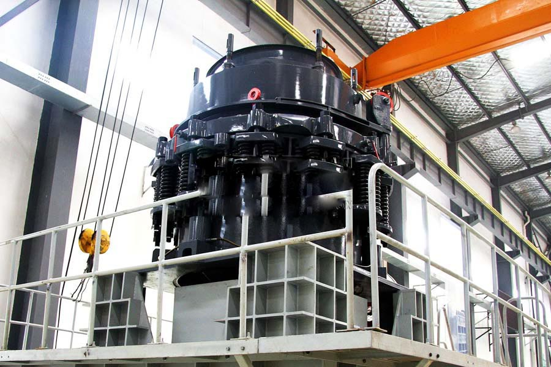

Construction waste crushing production line

Mobile construction waste crushing station for urban construction waste crushing.
mini stone crusher price
mini stone crusher price. Visit a stone crushing plant Philippines _CAG sand topic, the choice of gravel stones factory production line equipment all from the Zenith manufacturing production line equipment. A 1200 * 1500 jaw crusher, four 1315 impact crusher, vibrating screen and belt conveyor and dust removal equipment.
Stone production line equipment, stones factory production line, sand production line, CAG Machinery Equipment Co., Ltd. of stone production line equipment, quartz stone crusher, stones factory production line, sand production line equipment automation of operational processes, higher productivity, more efficiency optimization crushing ratio greater crushed stone grain type is better.

Stone Crushing Plant
CAG Machinery (Stone Crushing Plant) in mineral processing aspects widely used, many customers get more benefits, CAG product also mainly for minerals, rock crusher, mineral grinding, sand stone and mineral processing and other fields. We provide Stone Crushing Plant technical guidance, based on your specific needs, for your rational design of production lines.
Because the tariff is low, you can (Stone Crushing Plant) to save a lot of costs, it can also be purchased to get more benefits, our products and designs for you is really value for money.
Crushed limestone and crushed stones factory need to select what material crusher equipment, stones factory equipment has a close relationship, such as limestone, gypsum and other materials generally use the hammer crusher, granite, iron ore and other materials you need to use the cone crusher, jaw crusher and so on.
Stone production line features high breakage ratio and little stone powder. Its output is 50-500t per hour. Additionally, the size of discharging granularity is adjustable.
This crushing plant can be used to crush limestone, granite, kaolinite, aggregate, gravel sand, gold ore, etc. It’s specially designed for output of 40-60 tph. In this crushing and screening plant, we choose vibrating feeder to feed jaw crusher PE500*750 whose capacity can be up to 45-80 tph. Secondary crushing equipment is impact crusher PF1010 whose capacity is 50-80 tph. For screening materials for different sizes, vibrating screen is playing its role.
This crushing and screening plant is designed considering the raw materials’ real situation and the specific requirement. It’s really suitable for small quarry crushing plant.
Currently, our products are widely exported to Russia, Saudi Arabia, Indonesia, Libya, Angola, Gabon, Guinea, and other countries as a result of superior quality and economical prices.
For more information about our stone crushing plants or any of other products, please do contact machinery Industry via email or contact addresses available on this website.
STONE QUARRY crusher dust, quarry dust field gravel stones factory shaker dust collector bag type dust collector filter shaker quarries gravel pits, stones factory, gravel field bag type dust collector mechanical rotating counter-selection Hair flat bag filter design the most reasonable.
mini stone crusher price. Open sand stones factory needs of crushing and screening equipment, quarry 6000 square gravel production line every day, investment crushing and screening sand stones factory production line how much money, a production 6000-8000 tons of quarry production line equipment offer daily, Philippines 600 * 900 jaw crusher, 750 * 1060 jaw crusher stone production line process consisting of.
Leave Me A Message, Now
If you have any questions regarding equipment prices, production line configuration or other problems, you can send a message to us, we will contact you soon.